From sentences to videos: each stage writes what the next one reads, and a gate stops the chain with a reason.
1 Task program
goal action sentences
program.yaml
written by hand
2 Semantic layer
parse ground quantities device logic scene graph expand sub-goals
sequence.yaml · semantic.json
MIG job · seconds
stops if a sentence is refused
3 Executor
compile IK bake proxies MuJoCo presses bake run records
trajectory · manifest
MIG job · 1–2 min
stops if proxies or a press check fails
4 Render
3 cameras GPU chunks encode
3 × mp4
H200 job · 3 s per frame
stops if missing frames · static video
5 Site
sentence table progress record videos timeline
html
login node → Pages
stops if broken link
Click a bar, a display state or a frame to jump the videos there.
microwave_v2_cook microwave_v2 · 51.4 s · 48 steps · hands: left done · 5/5 sub-goals 3/3 key presses contact-tested ✓ 10 sentences
48 steps
51.4 s run length
3/3 presses activated
1545 frames per camera
12 render chunks
3 videos
Sentences → steps ◆ key activated · ▲ ▼ finger contact starts / ends (measured in MuJoCo)
lanes · gaze: where the head looks · left / right hand: that hand's steps · body: standing still · device: its own motion and the measured key contacts
# sentence steps on the run clock0s 5s 10s 15s 20s 25s 30s 35s 40s 45s 50s achieved 1 open the microwave dooropen · door
a02_look_door · look_at · 1.0–1.6 s · kinematic a03_reach_door · reach left · 1.0–2.6 s · kinematic a04_align_door · pregrasp left · 2.6–3.2 s · kinematic a05_pull_door · pull left · 3.2–5.4 s · assisted_grasp a06_release_door · release left · 5.4–6.0 s · kinematic 5 steps
opening 100 % 2 move the bowl into the microwavemove · bowl
a07_left_back · retreat left · 6.0–7.4 s · kinematic a08_look_bowl · look_at · 7.4–8.0 s · kinematic a09_move_bowl · pick_place left · 7.4–12.5 s · assisted_grasp 3 steps
at the place 3 close the microwave doorclose · door
a10_left_back · retreat left · 12.5–13.9 s · kinematic a11_look_door · look_at · 13.9–14.5 s · kinematic a12_reach_door · reach left · 13.9–15.5 s · kinematic a13_align_door · pregrasp left · 15.5–16.1 s · kinematic a14_push_door · push left · 16.1–18.3 s · assisted_grasp a15_release_door · release left · 18.3–18.9 s · kinematic 6 steps
opening 0 % 4 press the Microwave keypress · key_microwave
a16_look_microwave · look_at · 18.9–19.5 s · kinematic a17_align_microwave · pregrasp left · 18.9–19.7 s · kinematic a18_press_microwave · press left · 19.7–20.4 s · contact_dynamics a19_release_microwave · release left · 20.4–20.9 s · kinematic 4 steps
activated ✓ 5 turn the dial to 2:25turn · dial
a20_look_dial · look_at · 20.9–21.5 s · kinematic a21_align_dial · pregrasp left · 20.9–21.6 s · kinematic a22_turn_dial_1 · rotate left · 21.6–22.6 s · assisted_grasp a23_regrip_dial_1 · release left · 22.6–23.1 s · kinematic a24_pinch_dial_1 · pregrasp left · 23.1–23.7 s · kinematic a25_turn_dial_2 · rotate left · 23.7–24.7 s · assisted_grasp a26_release_dial · release left · 24.7–25.2 s · kinematic 7 steps
2:25 = 1.45 rad 6 press the Start keypress · key_start_30s
a27_look_start_30s · look_at · 25.2–25.8 s · kinematic a28_align_start_30s · pregrasp left · 25.2–26.0 s · kinematic a29_press_start_30s · press left · 26.0–26.7 s · contact_dynamics a30_release_start_30s · release left · 26.7–27.2 s · kinematic 4 steps
activated ✓ 7 wait 4 secondswait
a31_left_back · retreat left · 27.2–28.6 s · kinematic a32_wait · idle · 28.6–32.6 s · kinematic 2 steps
4 s 8 press the Stop keypress · key_stop_eco
a33_look_stop_eco · look_at · 32.6–33.2 s · kinematic a34_reach_stop_eco · reach left · 32.6–34.3 s · kinematic a35_align_stop_eco · pregrasp left · 34.3–35.0 s · kinematic a36_press_stop_eco · press left · 35.0–35.7 s · contact_dynamics a37_release_stop_eco · release left · 35.7–36.2 s · kinematic 5 steps
activated ✓ 9 open the microwave dooropen · door
a38_left_back · retreat left · 36.2–37.6 s · kinematic a39_look_door · look_at · 37.6–38.2 s · kinematic a40_reach_door · reach left · 37.6–39.1 s · kinematic a41_align_door · pregrasp left · 39.1–39.8 s · kinematic a42_pull_door · pull left · 39.8–42.0 s · assisted_grasp a43_release_door · release left · 42.0–42.6 s · kinematic 6 steps
opening 100 % 10 move the bowl back where it wasmove · bowl
a44_left_back · retreat left · 42.6–44.0 s · kinematic a45_look_bowl · look_at · 44.0–44.6 s · kinematic a46_move_bowl · pick_place left · 44.0–49.0 s · assisted_grasp 3 steps
at the place
Display states 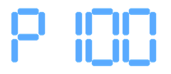
20.1 s 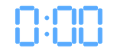
21.6 s 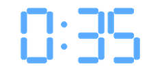
22.1 s 22.6 s 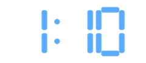
23.7 s 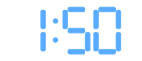
24.2 s 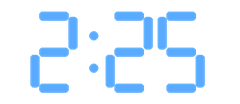
24.7 s 26.4 s 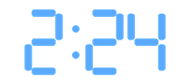
27.4 s 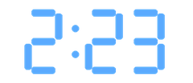
28.4 s 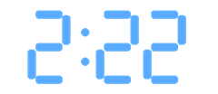
29.4 s 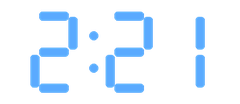
30.4 s 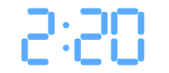
31.4 s 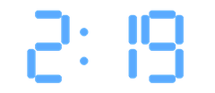
32.4 s 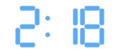
33.4 s 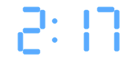
34.4 s 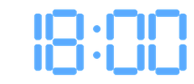
35.4 s Scene graph · before and after before the first command · 1.0 s at(bowl, home) at at(mug, home) at door joint 0 open -0 display:main text "18:00" 22 controls all at rest microwave_v2 mode none set_time_s 0 weight_g 0 remaining_s 0 running false display "18:00" clock "18:00" cycles_started 0 cycles_completed 0 busy false bowl mug cavity_place cavity_place_right counter left_hand holds none at none right_hand holds none at none home after the last command · 49.0 s · what differs in orange at(bowl, home) at at(mug, home) at door joint -1.45 open 1 display:main text "18:00" 22 controls dial joint 1.45 microwave_v2 mode none set_time_s 0 weight_g 0 remaining_s 0 running false display "18:00" clock "18:00" cycles_started 1 cycles_completed 0 busy false bowl mug cavity_place cavity_place_right counter left_hand holds none at none right_hand holds none at none home device parts · controls · displays objects · containers regions · hands · substances · home lines: at · held_by · contains (amount) · locked_in
What each command changed in the graph · ◆ a sub-goal became true there.
# sentence node attributes · old → new edges · + added · − removed · ~ changed 1 open the microwave door door.joint 0 → -1.45 — 2 move the bowl into the microwave left_hand.at "door_handle" → none + at(bowl, cavity_place) 3 close the microwave door◆ door.joint -1.45 → 0 — 4 press the Microwave key microwave_v2.mode none → "microwave" — 5 turn the dial to 2:25◆ microwave_v2.set_time_s 0 → 145 — 6 press the Start key◆ microwave_v2.remaining_s 0 → 145 — 7 wait 4 seconds microwave_v2.remaining_s 145 → 141 — 8 press the Stop key◆ microwave_v2.mode "microwave" → none — 9 open the microwave door door.joint 0 → -1.45 — 10 move the bowl back where it was◆ left_hand.at "door_handle" → none + at(bowl, home)
Progress record · sub-goals over the scene graph ✓ bowl inside, door closed #3 · 18.9 s ✓ 2:25 at full microwave power set #5 · 25.2 s ✓ cycle running #6 · 27.2 s ✓ cycle stopped and cleared #8 · 36.2 s ✓ bowl back on the counter #10 · 49.0 s
conditions over the scene graph ✓ bowl inside, door closed milestone at(bowl, cavity_place) ∧ door.open ≤ 0.05 ✓ 2:25 at full microwave power set milestone microwave_v2.mode = "microwave" ∧ microwave_v2.set_time_s = 145 ✓ cycle running milestone microwave_v2.running = true ✓ cycle stopped and cleared holds at the end microwave_v2.running = false ∧ microwave_v2.mode = none ✓ bowl back on the counter holds at the end at(bowl, home)
Press checks in MuJoCo · 3/3 passed key_microwave · a18_press_microwave
activation 0.9 mm full travel 1.5 mm 0 1.8 mm 19.7 s 20.4 s press window activated @ 19.98 s released @ 20.44 s ✓ travel ✓ contact ✓ returns ✓ control still ✓ control no contact ✓ no penetration
solid: fingertip on the key · dashed: offset control · peak 2.6 N
key_start_30s · a29_press_start_30s
activation 0.9 mm full travel 1.5 mm 0 1.8 mm 26.0 s 26.7 s press window activated @ 26.31 s released @ 26.77 s ✓ travel ✓ contact ✓ returns ✓ control still ✓ control no contact ✓ no penetration
solid: fingertip on the key · dashed: offset control · peak 2.6 N
key_stop_eco · a36_press_stop_eco
activation 0.9 mm full travel 1.5 mm 0 1.8 mm 35.0 s 35.7 s press window activated @ 35.29 s released @ 35.75 s ✓ travel ✓ contact ✓ returns ✓ control still ✓ control no contact ✓ no penetration
solid: fingertip on the key · dashed: offset control · peak 2.6 N
Three cameras at the end of each sentence Recorded run Cook a bowl for 2:25 at full microwave power, then take it out
✓ bowl inside, door closed #3 · 18.9 s ✓ 2:25 at full microwave power set #5 · 25.2 s ✓ cycle running #6 · 27.2 s ✓ cycle stopped and cleared #8 · 36.2 s ✓ bowl back on the counter #10 · 49.0 s
conditions over the scene graph ✓ bowl inside, door closed milestone at(bowl, cavity_place) ∧ door.open ≤ 0.05 ✓ 2:25 at full microwave power set milestone microwave_v2.mode = "microwave" ∧ microwave_v2.set_time_s = 145 ✓ cycle running milestone microwave_v2.running = true ✓ cycle stopped and cleared holds at the end microwave_v2.running = false ∧ microwave_v2.mode = none ✓ bowl back on the counter holds at the end at(bowl, home)
microwave_v2_cook · external camera · 51.5 smicrowave_v2_cook · first-person camera · 51.5 smicrowave_v2_cook · hand close-up camera · 51.5 s
▶ play all three pause ↺ restart
stand still open the microwave door move the bowl → inside the microwave close the microwave door press Microwave turn dial press +30s / Start wait · display, light, turntable press Stop / Eco open the microwave door move the bowl → on the counter
gaze left hand right hand body device 0s 5s 10s 15s 20s 25s 30s 35s 40s 45s 50s stand still · 0.0–1.0 s · kinematic look at the microwave door · 1.0–1.6 s · kinematic reach the microwave door · left hand · 1.0–2.6 s · kinematic align on the microwave door · left hand · 2.6–3.2 s · kinematic open the microwave door · left hand · 3.2–5.4 s · assisted grasp release the microwave door · left hand · 5.4–6.0 s · kinematic hand back · left hand · 6.0–7.4 s · kinematic look at the bowl · 7.4–8.0 s · kinematic move the bowl → inside the microwave · left hand · 7.4–12.5 s · assisted grasp move the bowl → inside the microwave hand back · left hand · 12.5–13.9 s · kinematic look at the microwave door · 13.9–14.5 s · kinematic reach the microwave door · left hand · 13.9–15.5 s · kinematic align on the microwave door · left hand · 15.5–16.1 s · kinematic close the microwave door · left hand · 16.1–18.3 s · assisted grasp release the microwave door · left hand · 18.3–18.9 s · kinematic look at Microwave · 18.9–19.5 s · kinematic align on Microwave · left hand · 18.9–19.7 s · kinematic press Microwave · left hand · 19.7–20.4 s · contact-tested press release Microwave · left hand · 20.4–20.9 s · kinematic look at dial · 20.9–21.5 s · kinematic align on dial · left hand · 20.9–21.6 s · kinematic turn dial · left hand · 21.6–22.6 s · assisted grasp release dial · left hand · 22.6–23.1 s · kinematic align on dial · left hand · 23.1–23.7 s · kinematic turn dial · left hand · 23.7–24.7 s · assisted grasp release dial · left hand · 24.7–25.2 s · kinematic look at +30s / Start · 25.2–25.8 s · kinematic align on +30s / Start · left hand · 25.2–26.0 s · kinematic press +30s / Start · left hand · 26.0–26.7 s · contact-tested press release +30s / Start · left hand · 26.7–27.2 s · kinematic hand back · left hand · 27.2–28.6 s · kinematic wait · display, light, turntable · 28.6–32.6 s · kinematic wait · display, light, turntable look at Stop / Eco · 32.6–33.2 s · kinematic reach Stop / Eco · left hand · 32.6–34.3 s · kinematic align on Stop / Eco · left hand · 34.3–35.0 s · kinematic press Stop / Eco · left hand · 35.0–35.7 s · contact-tested press release Stop / Eco · left hand · 35.7–36.2 s · kinematic hand back · left hand · 36.2–37.6 s · kinematic look at the microwave door · 37.6–38.2 s · kinematic reach the microwave door · left hand · 37.6–39.1 s · kinematic align on the microwave door · left hand · 39.1–39.8 s · kinematic open the microwave door · left hand · 39.8–42.0 s · assisted grasp release the microwave door · left hand · 42.0–42.6 s · kinematic hand back · left hand · 42.6–44.0 s · kinematic look at inside the microwave · 44.0–44.6 s · kinematic move the bowl → on the counter · left hand · 44.0–49.0 s · assisted grasp move the bowl → on the counter hand back · left hand · 49.0–50.4 s · kinematic stand still · 50.4–51.4 s · kinematic display · effect display light · effect light turntable · device motor turntable finger touches the key @ 19.94 s · Microwave · measured in MuJoCo key activated @ 19.98 s · Microwave · measured in MuJoCo key released @ 20.44 s · Microwave · measured in MuJoCo finger leaves the key @ 20.44 s · Microwave · measured in MuJoCo finger touches the key @ 26.27 s · +30s / Start · measured in MuJoCo key activated @ 26.31 s · +30s / Start · measured in MuJoCo key released @ 26.77 s · +30s / Start · measured in MuJoCo finger leaves the key @ 26.77 s · +30s / Start · measured in MuJoCo finger touches the key @ 35.25 s · Stop / Eco · measured in MuJoCo key activated @ 35.29 s · Stop / Eco · measured in MuJoCo key released @ 35.75 s · Stop / Eco · measured in MuJoCo finger leaves the key @ 35.75 s · Stop / Eco · measured in MuJoCo ◆ key activated · ▲ ▼ finger contact starts / ends (measured in MuJoCo)
lanes · gaze: where the head looks · left / right hand: that hand's steps · body: standing still · device: its own motion and the measured key contacts
0.4 s · stand still 3.6 s · open the microwave door 10.0 s · move the bowl → inside the microwave 15.9 s · close the microwave door 19.7 s · press Microwave 22.6 s · turn dial 26.6 s · press +30s / Start 30.2 s · wait · display, light, turntable 34.6 s · press Stop / Eco 40.1 s · open the microwave door 47.0 s · move the bowl → on the counter